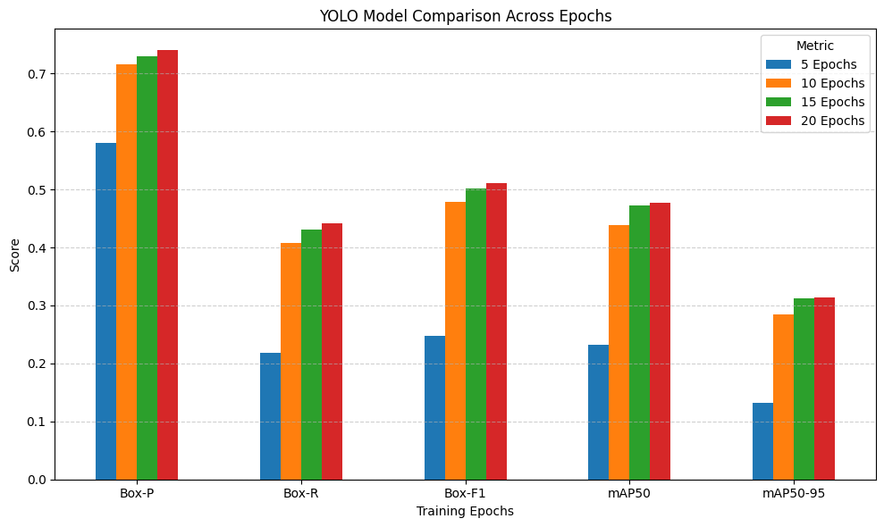
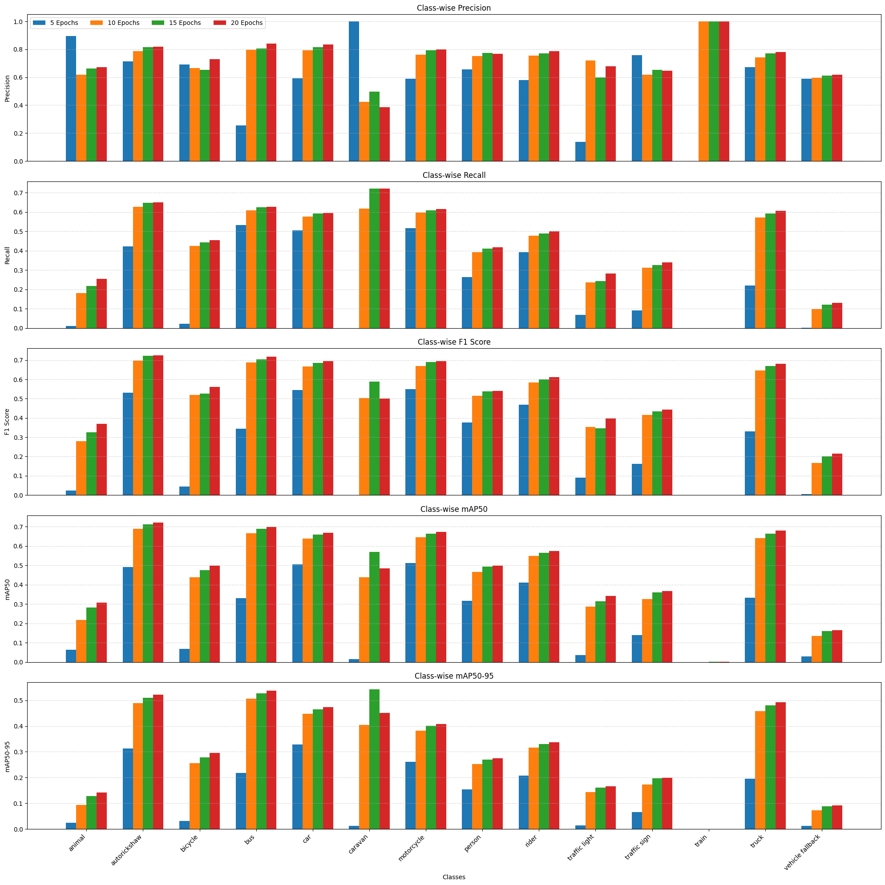

Confusion Matrix
A confusion matrix is a table used to evaluate the performance of a classification model. It shows the counts of true positives, false positives, true negatives, and false negatives for each class.

The model was evaluated using standard metrics including Precision, Recall, and mAP (mean Average Precision). These metrics provide insights into the model's performance in detecting objects accurately.
Precision measures the accuracy of positive predictions, while Recall assesses the model's ability to find all relevant instances. mAP summarizes the precision-recall curve and is a common metric for object detection tasks.
It refers to the proportion of correct positive predictions (True Positives) out of all the positive predictions made by the model (True Positives + False Positives). It is a measure of the accuracy of the positive predictions.
The formula for Precision is:
Precision = True Positives / (True Positives + False Positives)
Where:
It is also known as Sensitivity or True Positive Rate where we measures the proportion of actual positive instances that were correctly identified by the model. It is the ratio of True Positives to the total actual positives (True Positives + False Negatives).
The formula for Recall is:
Recall = True Positives / (True Positives + False Negatives)
Where:
F1 Score is a performance metric used in machine learning to evaluate how well a classification model performs on a dataset especially when the classes are imbalanced meaning one class appears much more frequently than another. It is the harmonic mean of precision and recall which combine both metrics into a single value that balances their importance.
The F1 Score combines precision and recall using the harmonic mean:
F1 Score = 2 * (Precision * Recall) / (Precision + Recall)
Where:
A confusion matrix is a table used to evaluate the performance of a classification model. It shows the counts of true positives, false positives, true negatives, and false negatives for each class.
Overall evaluation metrics provide a comprehensive view of model performance across all classes.
 